메타분석 자동화 도구 — 체계적 문헌고찰 전 과정 자동화 웹 애플리케이션
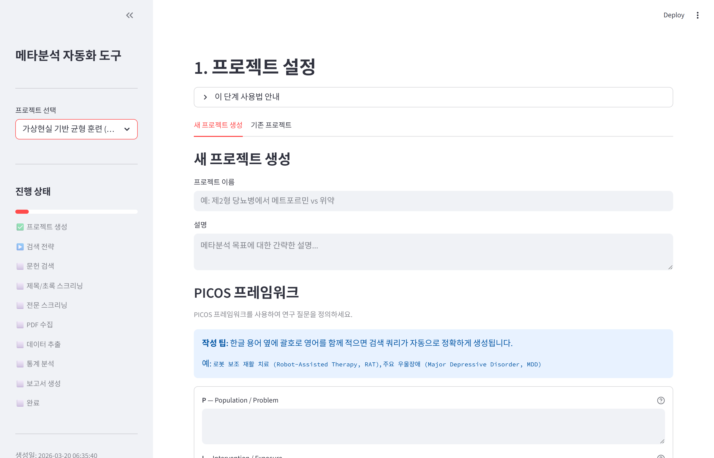
앱 메인 화면 — 사이드바 네비게이션 + PICOS 프로젝트 설정
BaseAgent 추상 클래스를 상속하는 6개 에이전트가 run()과 get_status() 인터페이스를 통일하고, SQLite DB를 통해 데이터를 공유합니다. 각 에이전트는 독립 실행 가능하여 파이프라인 중간부터 진입할 수 있는 느슨한 결합 구조입니다.
PICOS 프레임워크를 사용하여 연구 질문을 구조화합니다. 여기에 입력한 PICOS가 이후 모든 단계의 기준이 됩니다 — 검색 쿼리 생성, 스크리닝 판정, 데이터 추출, 보고서까지 일관되게 연결됩니다.
| 요소 | 의미 | 예시 |
|---|---|---|
| P | 대상 집단 (Population) | 뇌졸중 환자의 상지 기능 장애 |
| I | 중재 (Intervention) | 로봇 보조 재활 치료 |
| C | 비교군 (Comparison) | 전통적 재활 치료 |
| O | 결과 변수 (Outcome) | FMA-UE, MBI, 일상생활 수행능력 |
| S | 연구 설계 (Study design) | 무작위 대조 시험 (RCT) |
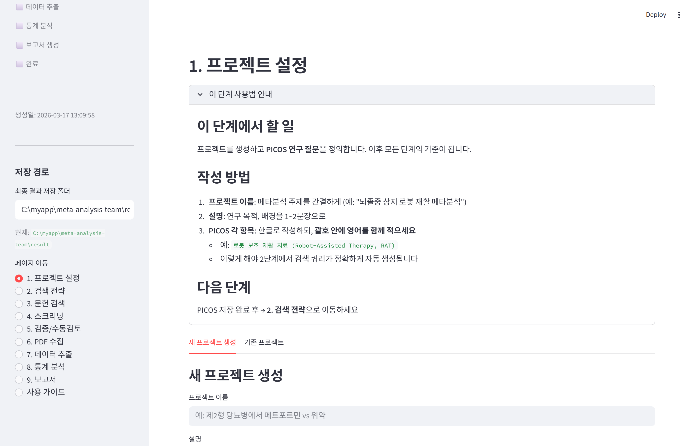
프로젝트 설정 페이지 — 사용법 안내 + 페이지 이동 네비게이션
PICOS 입력 폼 + 작성 방법 가이드
검색 전략은 두 가지 모드를 지원합니다.
자동 생성 모드 — 내장 한→영 의학 용어 매핑 테이블 기반으로 PubMed/Cochrane/Embase/자연어 4종 쿼리 즉시 생성. 빠르지만 테이블에 없는 주제는 한계.
Claude 활용 모드 — 6종 DB(PubMed, WoS, Embase, CINAHL, Cochrane, SCOPUS)별 구문 규칙이 포함된 체계적 프롬프트 생성. MeSH, Emtree, CINAHL Headings 등 DB 고유 문법 자동 적용. 어떤 주제든 고품질 검색식.
Claude가 반환한 JSON을 붙여넣으면 7개 DB 탭에 자동으로 채워지며, 사용자가 수정 후 저장할 수 있습니다.
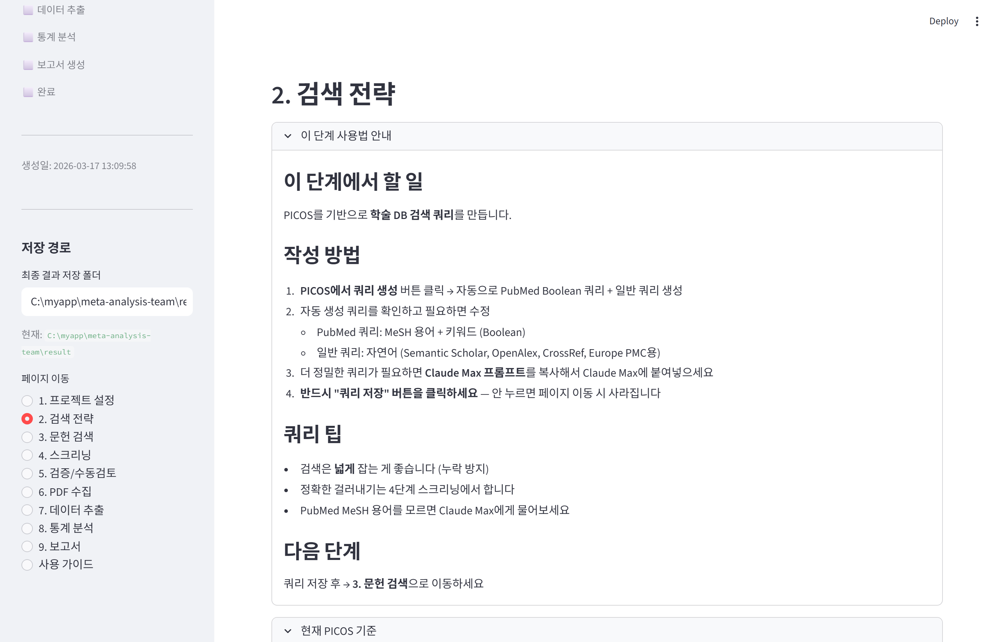
검색 전략 사용법 안내 — 쿼리 팁 + 작업 방법
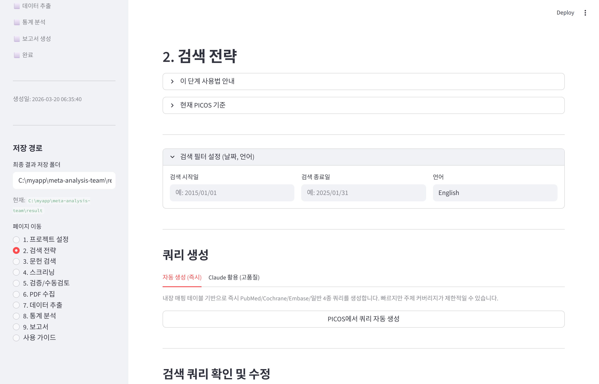
검색 필터 설정 + 자동 생성 / Claude 활용 모드 선택 + 쿼리 확인 및 수정
5개 학술 DB API를 동시에 검색하고, 결과를 자동으로 수집합니다.
| DB | 특징 | 레코드 수 |
|---|---|---|
| PubMed | 의생명 분야 최대 DB | 36M+ |
| Europe PMC | 유럽 연구 포함 | 40M+ |
| Semantic Scholar | AI 기반 전 분야 | 200M+ |
| OpenAlex | 오픈 학술 데이터 | 250M+ |
| CrossRef | DOI 등록 문헌 | 150M+ |
3단계 지능형 중복 제거:
1. DOI 정확 매칭 (정규화: strip, lowercase)
2. 제목 퍼지 매칭 (rapidfuzz, 유사도 ≥ 90%)
3. 제1저자 + 출판연도 복합키 → 제목 유사도 ≥ 75%
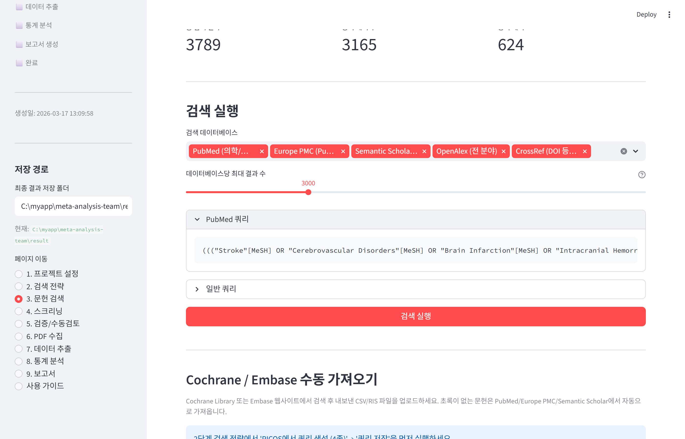
총 3,789편 수집, 624편 중복 제거 → 3,165편 스크리닝 대상 + 5개 DB 동시 검색
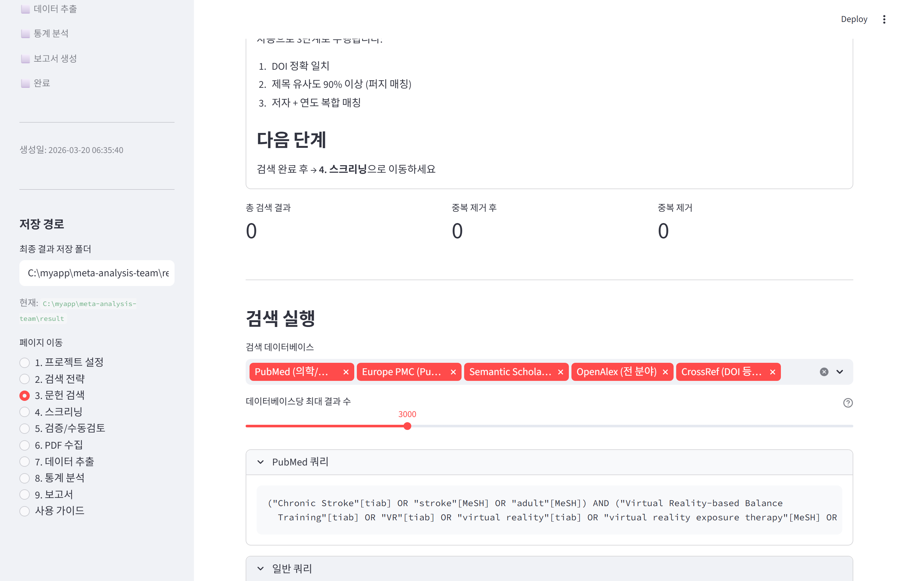
PubMed 쿼리 확인 + Cochrane/Embase 수동 CSV 가져오기
| 단계 | 기준 | 판정 |
|---|---|---|
| 1차: 제목/초록 | PICOS 기본 부합 여부 | 포함 / 제외 / 보류 |
| 2차: 전문 | 상세 PICOS + 연구 태그 분류 | 포함 / 제외 / 보류 |
| 3차: 정밀 선별 | 최종 적격성 평가 | 포함 / 제외 |
작동 방식: 100건 단위로 CSV 배치 파일을 내보내고, Claude에 스크리닝 프롬프트와 함께 전달합니다. Claude가 각 논문의 PICOS 부합 여부, 신뢰도(0~1), 배제 사유를 판정하면 결과 CSV를 다시 가져옵니다. API 호출 없이 LLM 품질의 판정을 얻는 방식입니다.
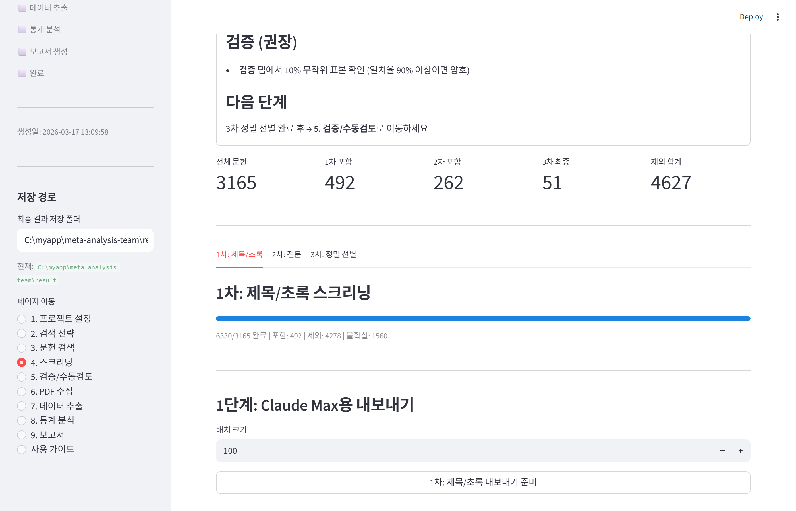
3단계 스크리닝 메트릭 — 1차 492편 포함, 2차 262편, 3차 51편 최종 포함
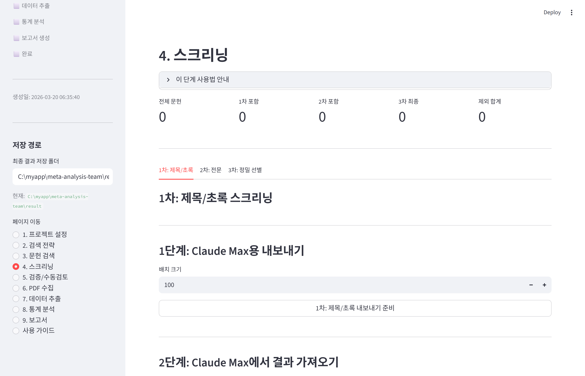
1차 제목/초록 스크리닝 — Claude Max용 CSV 배치 내보내기/가져오기
AI 스크리닝 결과의 품질을 검증하는 단계입니다.
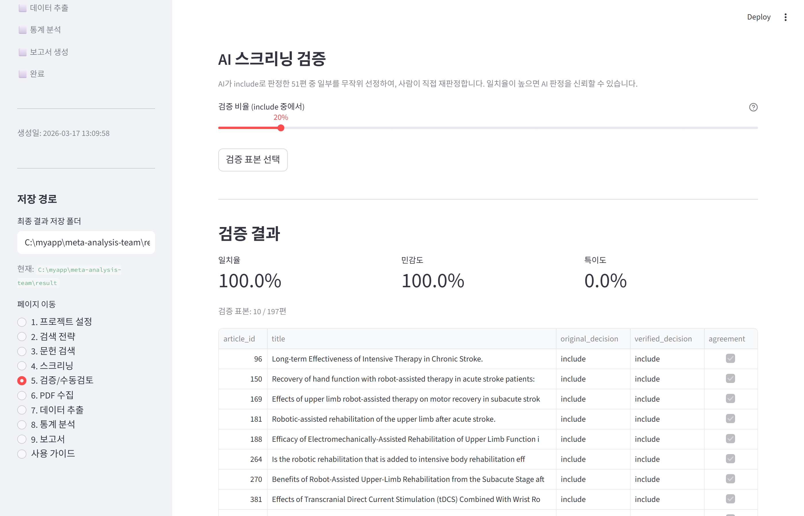
AI 스크리닝 검증 — 일치율 100%, 민감도 100%, 특이도 0.0% (검증 표본 10/197편)
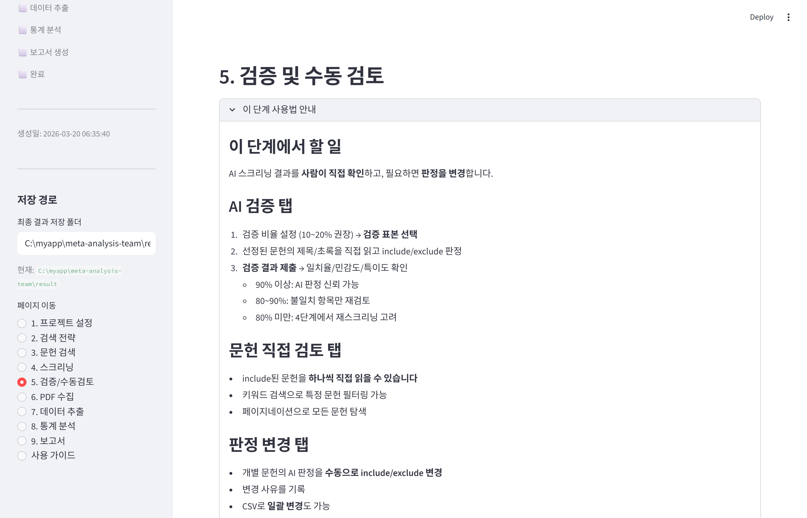
검증 및 수동 검토 사용법 안내 — AI 검증, 문헌 직접 검토, 판정 변경 3개 탭
데이터 추출 전에 원문 PDF를 확보해야 정확한 수치 데이터를 추출할 수 있습니다. 4개 소스에서 순차적으로 자동 수집:
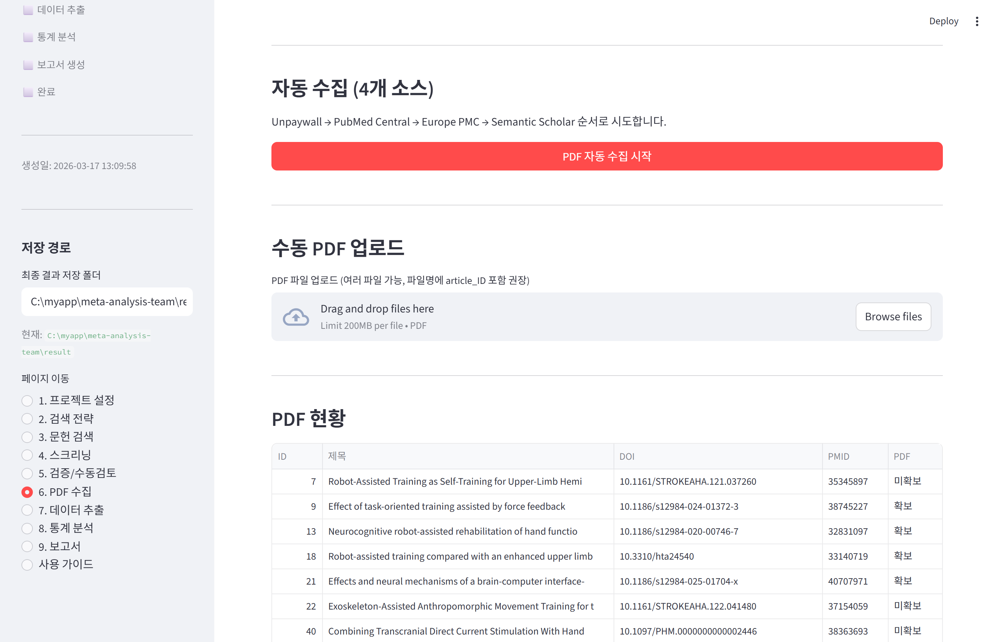
PDF 자동 수집 + 수동 업로드 + 문헌별 확보 현황 테이블
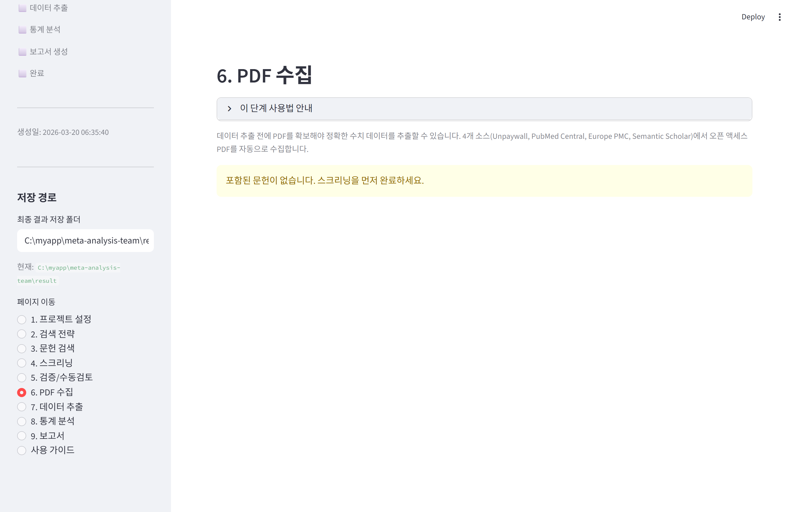
PDF 수집 페이지 전체 — 사용법 안내 + 9개 페이지 네비게이션
포함된 문헌에서 연구 특성과 결과 변수를 추출합니다.
Risk of Bias 2.0 평가:
| 도메인 | 평가 내용 |
|---|---|
| D1 | 무작위화 과정 |
| D2 | 의도된 중재로부터의 이탈 |
| D3 | 결측 결과 데이터 |
| D4 | 결과 측정 |
| D5 | 보고된 결과의 선택 |
| 전체 | 종합 판정 (Low / Some concerns / High) |
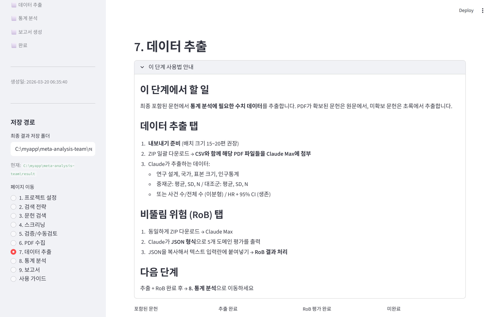
데이터 추출 사용법 — 배치 내보내기 → Claude Max에 PDF 첨부 → CSV 가져오기
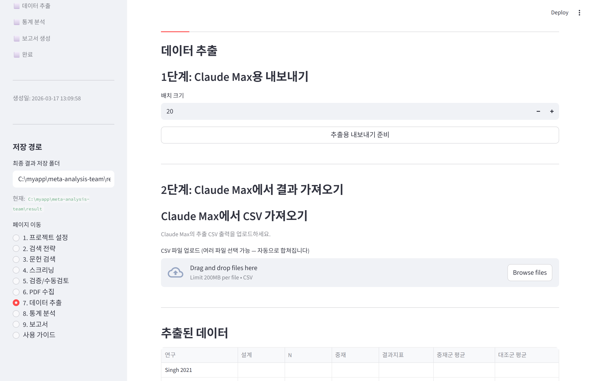
추출 데이터 테이블 + Claude Max CSV 가져오기
Python-R 브릿지를 통해 R의 metafor 패키지로 통계 분석을 수행합니다.
Python에서 JSON으로 데이터를 전달하고, R이 분석 수행 후 결과 JSON + 플롯 이미지를 반환하는 브릿지 구조입니다.
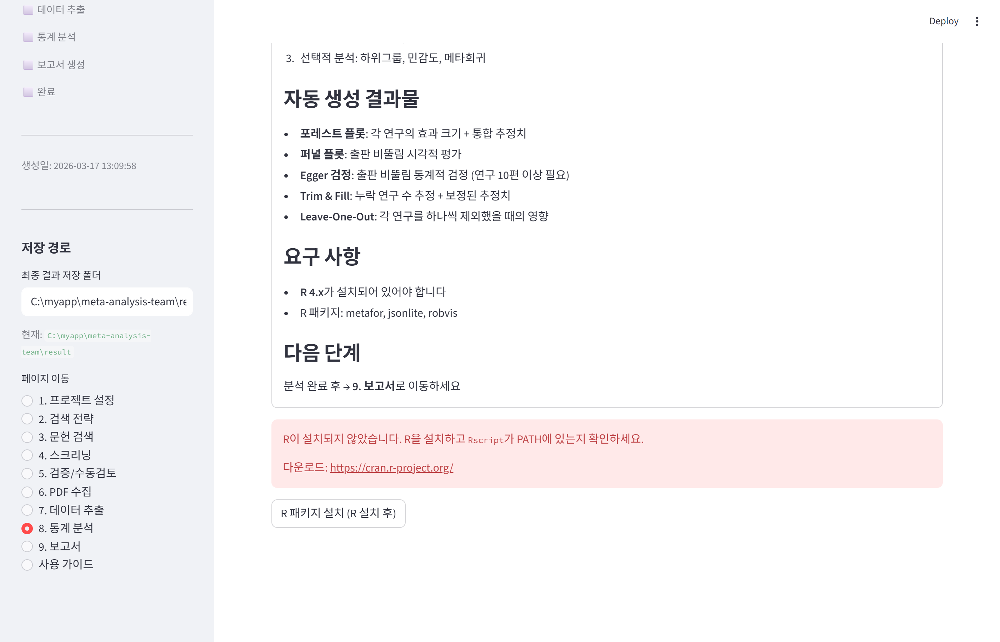
통계 분석 사용법 — 자동 생성 결과물 (Forest/Funnel Plot, Egger's, Leave-One-Out)
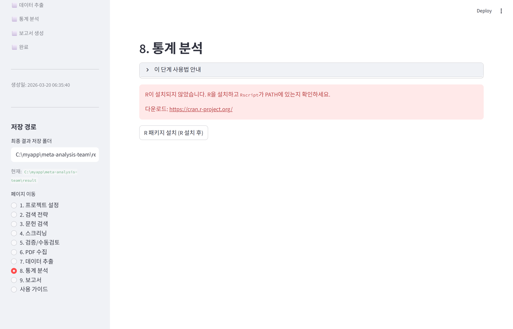
R 4.x 연동 — R이 미설치된 경우 안내 메시지
메타분석의 최종 산출물인 PRISMA 2020 표준 보고서 구성요소를 자동 생성합니다.
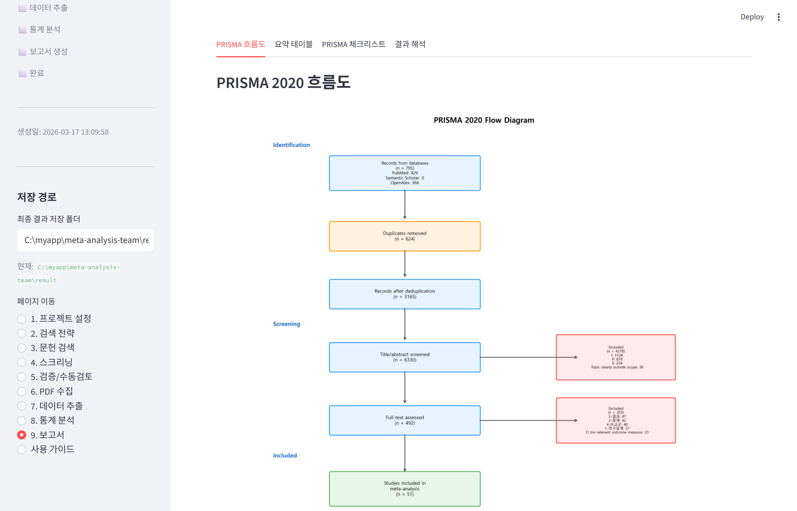
PRISMA 2020 흐름도 — 795편 검색 → 624편 중복 제거 → 6,330편 스크리닝 → 51편 최종 포함
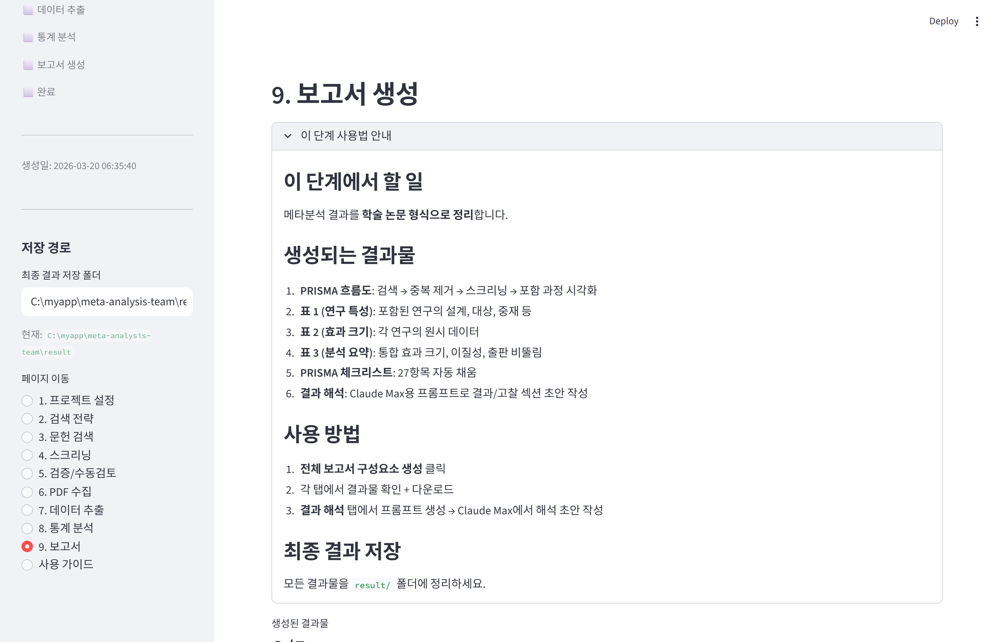
보고서 생성 사용법 — 생성되는 결과물 목록 + 최종 결과 저장
앱 내에 전체 워크플로우를 안내하는 내장 사용 가이드 페이지가 포함되어 있습니다. 각 단계별 작업 방법, PICOS 작성 예시, 다음 단계 안내를 제공합니다.
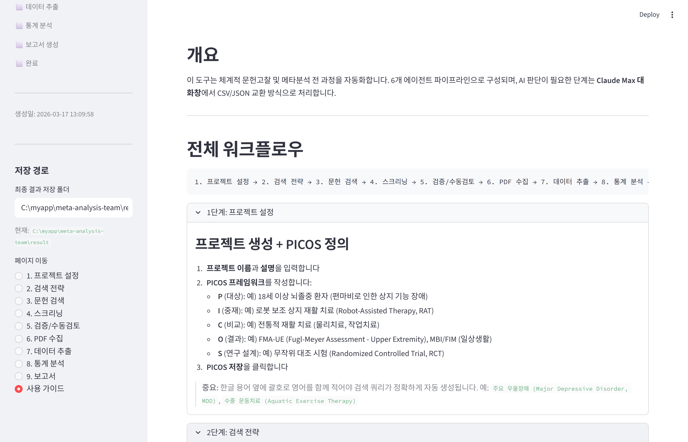
내장 사용 가이드 — 전체 워크플로우 + 단계별 상세 설명
API를 직접 호출하지 않고, 프롬프트 자동 생성 → 사용자가 Claude에 복붙 → JSON 결과 파싱 방식을 채택. 스크리닝, 데이터 추출, 검색 전략 생성 모두 이 방식으로 동작하여 AI 품질의 결과를 비용 없이 활용합니다.
DOI 정확 매칭 → 제목 퍼지 매칭(rapidfuzz 90%) → 저자+연도 복합키 매칭의 3단계를 거쳐 정밀도와 재현율을 동시에 확보합니다.
메타분석의 사실상 표준인 R의 metafor 패키지를 Python에서 활용하기 위해, JSON 기반 양방향 데이터 교환 브릿지를 구현. 6개 R 스크립트가 Forest Plot, Funnel Plot, RoB 시각화, 하위그룹/민감도/메타회귀 분석을 수행합니다.
체계적 문헌고찰의 국제 보고 표준인 PRISMA 2020의 흐름도, 체크리스트, 요약 테이블을 자동 생성합니다.
Frontend(Streamlit) + Backend(Python) + DB(SQLite) + 통계(R)
다중 에이전트 파이프라인, 모듈화, 데이터 접근 계층 분리
9개 서비스 연동, 레이트 리미팅, 에러 핸들링
퍼지 매칭, 배치 처리, CSV/RIS/JSON 파싱
체계적 문헌고찰, PRISMA 2020, RoB 2.0, 메타분석 통계
Claude 프롬프트 자동 생성 → 파싱 방식으로 API 비용 $0 달성